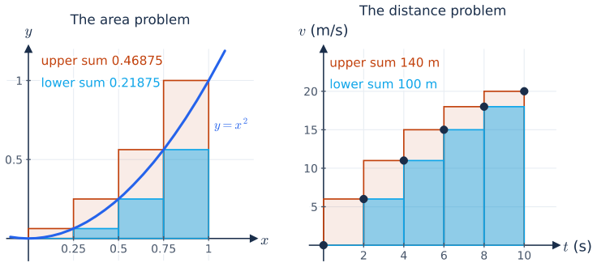
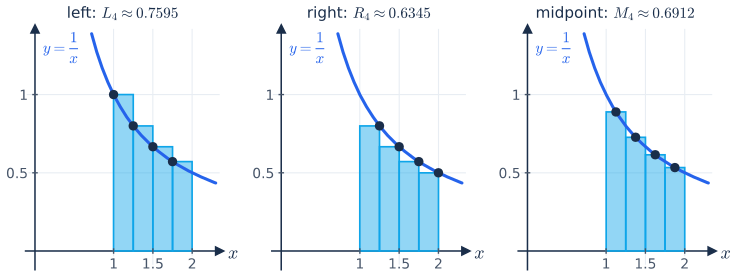
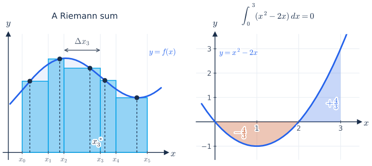
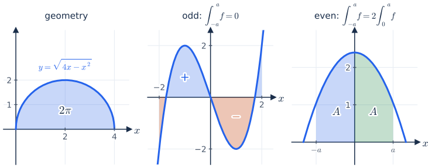
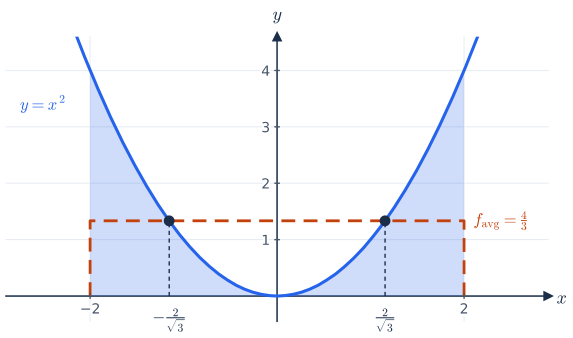

Find areas and distances by adding up thin rectangles, and make the idea exact. You will compute Riemann sums by hand and by computer, find areas exactly as limits of sums, define the definite integral, and evaluate and estimate integrals with their properties, with geometry and with symmetry.
⏱ 270 minYou need: Modules 1 to 8, in particular limits (Module 2), continuity and the Extreme Value Theorem (Module 3) and velocity (Module 4)
In this module you will
Write sums in sigma notation, and prove and use the formulas for 1+2+⋯+n and for the sums of the squares and of the cubes of 1,2,…,n
Compute left, right and midpoint Riemann sums, and estimate a distance from speed readings
Define the definite integral, and find integrals exactly as limits of Riemann sums
Interpret an integral as a signed area, and evaluate integrals with geometry and symmetry
Use the properties of the integral to combine, compare and bound integrals
Find the average value of a function, and use the Mean Value Theorem for integrals
1
Areas and distances
Module 1 posed two problems (Section 1.1). The tangent problem asked for the slope of a curve at a point, and Part II solved it with the derivative. The area problem asked for the area under a curve, and Figure 1.1 suggested a way in: fill the region with thin rectangles, add up their areas, and see what number the totals approach as the rectangles get thinner. This module carries out that plan. Its answer is the definite integral, the second great idea of calculus.
The area problem
You know the area of a rectangle (width times height) and of a triangle (half the base times the height), and every polygon can be cut into triangles. A region with a curved side is different: no cutting turns it into triangles. Take the simplest example, the region under the parabola y=x2 from x=0 to x=1, enclosed by the curve, the x-axis and the line x=1. Call its area A.
You cannot compute A yet, but you can trap it. The idea is old: Archimedes, in the 3rd century BC, found areas with the method of exhaustion, filling a region more and more completely with simpler shapes, an ancestor of the sums in this module. Cut [0,1] into four strips of width 41. The curve rises across each strip, so a rectangle as tall as the curve at the strip’s left end fits under the curve, and a rectangle as tall as the curve at its right end covers the strip’s part of the region (Figure 9.1, left).
Example 9.1Trapping an area between two sums✓ Checked
Find a lower and an upper estimate of the area A under y=x2 from 0 to 1, with four strips.
The strips are [0,41],[41,21],[21,43] and [43,1], each of width 41. At their left ends the curve has the heights 02,(41)2,(21)2 and (43)2, that is, 0,161,164 and 169. So the rectangles under the curve have the total area
41(0+161+164+169)=6414=0.21875.
At the right ends the heights are 161,164,169 and 1, so the covering rectangles have the total area
41(161+164+169+1616)=6430=0.46875.
The region contains the first four rectangles and lies inside the second four, so
0.21875<A<0.46875.
The two totals differ by 0.25. Each height except the first and the last appears in both totals, so the difference is 41(1−0): the strip width times the difference between the heights at the two ends of [0,1].
Four strips leave a wide gap, but thinner strips close it. With 100 strips the two totals are 0.32835 and 0.33835 (Section 9.3 computes them), and the gap is only 1001. They close in on 31, and Section 9.3 proves that A=31.
The distance problem
A car that drives at a constant 20 m/s for 10 seconds covers 20×10=200 metres. On a graph of speed against time, the speed is a horizontal line at height 20, and the distance is the area of the rectangle under it: width 10 seconds, height 20 metres per second. The units multiply as well, seconds times metres per second giving metres.
When the speed changes, the area under the speed graph is still the distance. The falling ball of Module 1 has the speed v(t)=9.8t m/s after t seconds (Section 4.1). Its speed graph is a straight line through the origin, so the region under it from time 0 to time t is a triangle with base t and height 9.8t, of area
21⋅t⋅9.8t=4.9t2.
That is exactly the distance s(t)=4.9t2 that the ball has fallen (Section 1.3). This is no coincidence: Section 9.4 explains why, and Module 10 proves it.
Usually there is no formula for the speed, only readings.
Example 9.2Distance from a speedometer✓ Checked
Suppose a passenger reads a car’s speedometer every 2 seconds as the car speeds up from rest, and converts the readings to metres per second. The numbers are made up:
Time t (s)
Speed v (m/s)
0
0
2
6
4
11
6
15
8
18
10
20
Estimate the distance the car covers in these 10 seconds.
The car speeds up throughout, so during each 2-second interval its speed lies between the reading at the start of the interval and the reading at the end. At speeds between m and M for Δt seconds, a car covers between mΔt and MΔt metres. (The Mean Value Theorem of Module 8 makes this precise: the distance covered from t1 to t2 is v(c)(t2−t1) for some time c in between.) Adding up over the five intervals, the distance is at least
2(0+6+11+15+18)=2×50=100 m
and at most
2(6+11+15+18+20)=2×70=140 m.
So the car covers between 100 and 140 metres. The average of the two, 120 m, is a reasonable single estimate; Module 11 studies it under the name of the trapezoidal rule.
The two estimates differ by 40 m. The readings at 2, 4, 6 and 8 seconds appear in both sums, so the difference is 2×(20−0): the time step times the change in speed from the first reading to the last. Reading the speedometer every second would halve the gap, to 20 m.

Figure 9.1
The two problems are one. Left: the area under y=x2 from 0 to 1 lies between the total of the blue rectangles, 0.21875, and the total of the orange ones, 0.46875 (Example 9.1). Right: the speed readings of Example 9.2 (dots); the distance covered lies between the blue total, 100 m, and the orange total, 140 m.
Key idea
The area problem and the distance problem are the same problem. Cut the interval into short pieces; on each piece, replace the changing height (or speed) by a constant one; add up the areas of the rectangles, height times width (or speed times time); then let the pieces shrink. The totals approach the exact answer. The rest of this module turns these steps into a definition, the definite integral, and into ways to compute it.
Watch out
The readings at the left ends give the lower estimate only because the speed increases. For a car that slows down, they give the upper estimate (Exercise 9.3). For a speed that rises and then falls, neither sum need be a lower or an upper estimate (Exercise 9.9).
2
Sigma notation
The sums of Section 9.1 had four or five terms. Thinner strips give longer sums, of a thousand terms, or of n terms for an unknown n. They need a compact notation.
Definition 9.1Sigma notation
For whole numbers m≤n and numbers am,am+1,…,an,
i=m∑nai=am+am+1+⋯+an.
The symbol ∑ is the Greek capital sigma, for “sum”, and the left side reads “the sum of ai for i from m to n”. The letter i is the index of summation, and m and n are the lower and upper limits of the sum.
The index runs through the whole numbers m,m+1,…,n, and each value gives one term, so there are n−m+1 terms. (The word “limit” here means an end of the range, not a limit in the sense of Module 2.) For example,
The index is a dummy variable: its name does not matter, so ∑i=15i2 and ∑k=15k2 are the same number, 55, and neither depends on i or k. To go the other way, from a sum to sigma notation, find a formula for the term with index i. The odd numbers 1,3,5,… are 2i−1 for i=1,2,3,…, and 2i−1=99 at i=50, so
1+3+5+⋯+99=i=1∑50(2i−1).
If vi is the speed reading of Example 9.2 at time t=2i, the two estimates there are ∑i=042vi=100 and ∑i=152vi=140.
Theorem 9.1Rules for sums
For numbers ai and bi, a constant c and whole numbers m≤n (with n≥1 in the third rule),
Write the sums out. The first rule is the distributive law: cam+⋯+can=c(am+⋯+an). The second regroups the terms, which addition allows: (am+bm)+⋯+(an+bn)=(am+⋯+an)+(bm+⋯+bn). In the third, the term c does not depend on i, so the sum is c+c+⋯+c with n terms, which is nc. The rule with − follows from the first two, with c=−1.
∎
Watch out
Sums do not multiply term by term: ∑aibi is not (∑ai)(∑bi). With ai=bi=i and n=2,∑i=12i⋅i=1+4=5, while (1+2)(1+2)=9. Nor do sums divide term by term, or go under square roots. And a constant summed n times is nc, not c:∑i=1103=30.
Sums of powers
The Riemann sums of x,x2 and x3 (Sections 9.3 and 9.4, and Exercise 9.5) lead to the sum of the whole numbers from 1 to n, and to the sums of their squares and of their cubes. Each has a closed form.
Theorem 9.2Sums of powers
For every whole number n≥1, the sums of the whole numbers from 1 to n, of their squares and of their cubes are
The three proofs below use three different ideas, each worth knowing.
Proof of the sum of the whole numbers from 1 to n
This is the pairing argument usually named after Gauss. Write the sum S=1+2+⋯+n forwards and backwards, and add the two lines column by column:
SS2S=1+2+⋯+n,=n+(n−1)+⋯+1,=(n+1)+⋯+(n+1).
In each column the two numbers add up to n+1, because as one goes up by 1 the other goes down by 1; and there are n columns. So 2S=n(n+1), and S=2n(n+1).
∎
Proof of the sum of the squares
Expanding (i+1)3=i3+3i2+3i+1 gives, for every i,
(i+1)3−i3=3i2+3i+1.
Add these equations for i=1,2,…,n. On the left almost everything cancels:
because every cube except (n+1)3 and 13 appears once with a plus sign and once with a minus sign. A sum that collapses like this, like a folding telescope, is called telescoping. On the right, with S=∑i=1ni2, the rules for sums and the first formula give
i=1∑n(3i2+3i+1)=3S+23n(n+1)+n.
So 3S=(n+1)3−1−n−23n(n+1). Since −1−n=−(n+1), every term on the right contains the factor n+1; take it out and simplify:
The third proof uses mathematical induction, the method that Exercise 5.10 used to prove the power rule. It proves a statement P(n) for every whole number n≥1 in two steps:
the base case: P(1) is true;
the inductive step: for every k≥1, if P(k) is true, then P(k+1) is true.
Then P(1) is true; so is P(2), by the inductive step with k=1; so is P(3), with k=2; and so on, like a row of dominoes in which each one knocks over the next.
Proof of the sum of the cubes
Let P(n) be the statement ∑i=1ni3=4n2(n+1)2. For the base case, both sides are 1 when n=1. For the inductive step, suppose that P(k) is true for some k≥1. The sum up to k+1 is the sum up to k plus one more term, so, taking out the common factor (k+1)2,
range(a, b) stops before b, so the third line leaves out 100: a classic off-by-one slip. SymPy’s summation finds sums whose upper limit is a symbol. Declaring the symbols as positive integers tells it what kind of numbers i and n are:
Python
import sympy as sp
i, n = sp.symbols('i n', integer=True, positive=True)
S2 = sp.summation(i**2, (i, 1, n))
print(S2)
print(sp.factor(S2))
print(sp.factor(sp.summation(i**3, (i, 1, n))))
print(sp.summation(2*i - 1, (i, 1, n)))
SymPy returns the sum of the squares expanded; factor turns it into the form of Theorem 9.2.
3
Riemann sums
Here are the sums of Section 9.1 in general. Let f be defined on [a,b], and cut [a,b] into n subintervals of equal width
Δx=nb−a,
read “delta x”. The cut points are xi=a+iΔx for i=0,1,…,n, so that x0=a and xn=b, and the ith subinterval is [xi−1,xi]. On each subinterval, take a height: the value of f at its left end xi−1, at its right end xi, or at its midpoint
mi=2xi−1+xi=a+(i−21)Δx.
Definition 9.2Left, right and midpoint sums
With this notation, the left sum, the right sum and the midpoint sum of f on [a,b] with n subintervals are
They are examples of Riemann sums, named after Riemann, who defined the integral of Section 9.4 in 1854 (it was published in 1868).
Where f is positive, each term is the area of a rectangle of width Δx; where f is negative, the term is negative, and Section 9.4 explains what such terms count. In Example 9.1 the two totals were L4=0.21875 and R4=0.46875 for f(x)=x2 on [0,1]. For a positive increasing function, Ln is always a lower estimate of the area and Rn an upper one; for a positive decreasing function it is the other way round.
Example 9.4Three sums for 1/x✓ Checked
Find L4,R4 and M4 for f(x)=1/x on [1,2], to four decimal places, and say what they tell you about the area under the graph.
Here Δx=42−1=41. The cut points are 1,45,23,47 and 2, where f takes the values 1,54,32,74 and 21. So
The midpoints are 89,811,813 and 815, where f takes the values 98,118,138 and 158:
M4=41(98+118+138+158)≈0.6912.
Since 1/x decreases on [1,2], on each subinterval its value at the left end is its largest and its value at the right end its smallest. So the left rectangles cover the region and the right rectangles fit inside it (Figure 9.2): the area A lies between R4≈0.6345 and L4≈0.7595. The midpoint sum lies between the two, since each midpoint height lies between the heights at the ends of its subinterval. It is also much closer to A: each midpoint rectangle falls short of the graph over the left half of its subinterval and sticks out above it over the right half, and the two errors nearly cancel. Module 10 shows that A=ln2≈0.693147, so M4 is already within 0.002 of it.

Figure 9.2
Left, right and midpoint sums for f(x)=1/x on [1,2] with n=4 (Example 9.4); the dots mark the points where the heights are taken. Since 1/x decreases, the left rectangles stick out above the graph and the right ones stay below it; the midpoint rectangles fall short of the graph over the left half of each subinterval and stick out above it over the right half.
How do the sums approach the area as n grows? Here are the three sums for f(x)=x2 on [0,1]:
n
Ln
Rn
Mn
4
0.21875
0.46875
0.328125
10
0.285
0.385
0.3325
100
0.32835
0.33835
0.333325
All three close in on 31=0.3333…: the left sums from below and the right sums from above, as for any increasing function, and the midpoint sums much faster than either. The error of an approximation is the exact value minus the approximation: positive when the approximation is too small, negative when it is too large. The errors show how fast:
n
31−Rn
31−Mn
10
−0.05166667
0.00083333
20
−0.02541667
0.00020833
40
−0.01260417
0.00005208
80
−0.00627604
0.00001302
Each time n doubles, the error of Rn is roughly halved, and so is that of Ln, which is almost the same size with the opposite sign; the error of Mn is divided by exactly 4. The exact formulas found below explain this: the error of Rn is about −2n1, and that of Mn is exactly 12n21. So a thousand times more rectangles make the left and right sums about a thousand times more accurate, but the midpoint sum a million times. Module 11 explains why, and builds the midpoint sum, the trapezoidal rule and Simpson’s rule into practical methods of numerical integration.
Compute itRiemann sums in Python
A short function computes all three sums. It takes the heights at a+(i+shift)Δx for i=0,1,…,n−1, with the shift 0 for the left ends, 1 for the right ends and 21 for the midpoints:
Python
defriemann(f, a, b, n, rule):
dx = (b - a)/n
shift = {'left': 0, 'right': 1, 'mid': 0.5}[rule]
returnsum(f(a + (i + shift)*dx) for i inrange(n))*dx
deff(x):
return1/x
for rule in ['left', 'right', 'mid']:
print(rule, riemann(f, 1, 2, 4, rule))
Output
left 0.7595238095238095
right 0.6345238095238095
mid 0.6912198912198912
These are the three sums of Example 9.4. Now the errors of the midpoint sums, measured against ln2, the area that Module 10 will find:
Python
import math
prev = Nonefor n in [10, 20, 40, 80]:
err = math.log(2) - riemann(f, 1, 2, n, 'mid')
note = ''if prev isNoneelsef' previous/this = {prev/err:.3f}'print(f'n = {n:2d} error = {err:.3e}{note}')
prev = err
Output
n = 10 error = 3.118e-04
n = 20 error = 7.808e-05 previous/this = 3.993
n = 40 error = 1.953e-05 previous/this = 3.998
n = 80 error = 4.883e-06 previous/this = 4.000
The errors are positive: the midpoint sums of 1/x are a little too small. Each doubling of n divides the error by almost exactly 4, as for x2.
Try it
Start with f(x)=x2 on [0,1], the left rule and n=4: you see the rectangles of Example 9.1 and L4=0.21875. Switch to the right rule and to the midpoint rule, and compare with the first table above. Press Double n a few times and watch the table of errors: for the left and right rules each doubling roughly halves the error, for the midpoint rule it divides the error by about 4. Then choose 1/x, for Example 9.4, and sinx on [0,π], where the area is 2 (Module 10 proves it). There the left and right sums are equal, because sin0=sinπ, and each doubling divides their error by about 4: Module 11 shows why. Type pi and 2pi as the ends of the interval for sinx, and the rectangles hang below the axis: Section 9.4 explains what they count. The trapezoid and Simpson rules belong to Module 11.
Watch out
Three slips with Riemann sums. First, Δx is nb−a, not n1: on [1,3] with n=4,Δx=0.5. Second, n subintervals have n+1 cut points x0,…,xn; the left sum uses the first n of them and the right sum the last n, so each sum has n terms, not n+1. Third, the midpoints are the middles of the subintervals, not of [a,b]:M4 on [1,2] takes its heights at 89,811,813 and 815.
Exact areas as limits
The table suggests that the area under y=x2 from 0 to 1 is 31. The formula for the sum of the squares turns the suggestion into a proof.
Example 9.5The area under y=x2✓ Checked
Show that the area A under y=x2 from 0 to 1 is exactly 31.
Here Δx=n1 and xi=ni, so f(xi)=n2i2. The factor n31 does not depend on i, so it comes out of the sum (the first rule for sums), and Theorem 9.2 adds up the rest:
Expanding the top, (n+1)(2n+1)=2n2+3n+1, and dividing each term by 6n2,
Rn=31+2n1+6n21.
The left sum has the same heights except that f(x0)=0 replaces f(xn)=1, so Ln=Rn−n1:
Ln=31−2n1+6n21.
As n→∞,n1 and n21 approach 0 (limits at infinity, Module 3, with n running through the whole numbers), so
n→∞limLn=n→∞limRn=31.
Since x2 increases on [0,1],Ln≤A≤Rn for every n, as in Example 9.1. So A is a fixed number squeezed between two quantities that both approach 31, and by the squeeze theorem of Module 2, which holds for limits at infinity too (Module 3), A=31.
The midpoint sum yields to the same method. The midpoints are mi=(i−21)n1, so f(mi)Δx=n31(i−21)2. Expand (i−21)2=i2−i+41, use all three rules for sums and the first two formulas of Theorem 9.2, then expand the bracket and collect terms:
which approaches 3b3, while Ln=Rn−nb3 approaches the same number. The area under y=x2 from 0 to b is 3b3:38 for b=2 and 9 for b=3.
4
The definite integral
Left, right and midpoint sums take their heights in three particular ways, over subintervals of equal width. Nothing forces these choices. Any point of a subinterval gives a reasonable height, and the subintervals may have different widths: narrow where the graph changes fast, for example. The definite integral is defined so that these choices do not matter.
Definition 9.3Partitions and Riemann sums
Let a<b. A partitionP of [a,b] is a list of points a=x0<x1<⋯<xn=b. It cuts [a,b] into n subintervals [xi−1,xi] of widths Δxi=xi−xi−1; the largest width is the norm of P, written ∥P∥. Choose a sample pointxi∗, read “x i star”, in each subinterval [xi−1,xi]. The Riemann sum of f for P and these sample points is
i=1∑nf(xi∗)Δxi.
Figure 9.3 (left) shows one. The left, right and midpoint sums are the Riemann sums for the partition into n equal parts, whose norm is nb−a, with the sample points at the left ends, the right ends or the midpoints.
Definition 9.4The definite integral
A function f defined on [a,b] is integrable on [a,b] if there is a number I that its Riemann sums approach as the partitions get finer: for every ε>0 there is a δ>0 such that
i=1∑nf(xi∗)Δxi−I<ε
for every partition P of [a,b] with ∥P∥<δ and every choice of the sample points xi∗. Then I is the definite integral of f from a to b, written
∫abf(x)dx=∥P∥→0limi=1∑nf(xi∗)Δxi.
The condition has the shape of the ε–δ definition of a limit in Module 2, with the Riemann sums in the role of the values f(x), and the norm ∥P∥ in the role of the distance between x and the point it approaches: however small a tolerance ε you set, every Riemann sum is within ε of I once the partition is fine enough, wherever the sample points are. It asks more than a limit of a function of one variable, because a Riemann sum is not determined by ∥P∥: many partitions have the same norm, and each allows many choices of sample points, and every one of these sums must be close to I. The symbol lim∥P∥→0, read “the limit as the norm of P approaches 0”, is shorthand for exactly this condition. There can be only one such number I: two different numbers cannot both be within ε of the same Riemann sums when ε is less than half the distance between them.
Reading the notation.∫abf(x)dx reads “the integral from a to b of f of x,dx”. The sign ∫, Leibniz’s notation (Module 1), is an elongated S, a reminder that an integral is a limit of sums. The function f(x) is the integrand, and a and b are the lower and upper limits of integration (ends of the interval again, not limits in the sense of Module 2). The dx recalls the widths Δxi, so that f(x)dx echoes f(xi∗)Δxi, and it names the variable. The integral is a number, not a function of x: like the index of a sum, x is a dummy variable, and
∫abf(x)dx=∫abf(t)dt=∫abf(u)du.
When f is integrable and f(x)≥0 on [a,b], the integral is the area under the graph of f from a to b. In fact the integral is now the definition of that area, and it gives the areas you already knew, as you will see below.
Which functions are integrable? Almost every function that you will meet.
Theorem 9.3Integrable functions
If f is continuous on [a,b], then f is integrable on [a,b]. More generally, f is integrable on [a,b] if it is bounded there (there is a number K with ∣f(x)∣≤K for every x in [a,b]) and has only finitely many discontinuities in [a,b], such as jumps.
The proof, like that of the Extreme Value Theorem, needs the completeness of the real numbers, and belongs to a course in real analysis; this series uses the theorem without proof. It covers polynomials, sinx,cosx and ex on every interval [a,b],1/x on every interval [a,b] that does not contain 0, and piecewise functions with finitely many jumps. Once you know that f is integrable, you may compute its integral with whichever Riemann sums are convenient:
Theorem 9.4Integrals from equal subintervals
If f is integrable on [a,b], then
∫abf(x)dx=n→∞limLn=n→∞limRn=n→∞limMn,
and the same holds for every other choice of sample points in the n equal subintervals.
Proof
Let I=∫abf(x)dx and ε>0, and take a δ as in Definition 9.4. The partition into n equal parts has norm nb−a, which is less than δ as soon as n>δb−a. For all such n, every Riemann sum of that partition, Ln,Rn and Mn among them, is within ε of I. That is what limn→∞Ln=I means, and the same for Rn and Mn.
∎
So the area of Example 9.5 is an integral: x2 is continuous, so it is integrable (Theorem 9.3), and by Theorem 9.4 its integral is the limit of the right sums. With the computation for [0,b],
∫01x2dx=31,∫0bx2dx=3b3(b>0).
The integral also gives the areas you already knew. The function x is continuous, and its right sums on [0,b] are
i=1∑nnib⋅nb=n2b2⋅2n(n+1)=2b2(1+n1),
which approach 2b2: the integral of x from 0 to b is the area of the triangle under its graph, with base b and height b. Every Riemann sum of a constant function c≥0 is c(b−a), because the widths add up to b−a: the area of a rectangle. And Module 11 shows that the integral gives the area πr2 of a disc.
The hypothesis “f is integrable” in Theorem 9.4 cannot be dropped: the Going deeper box below shows a function whose right sums have a limit although it is not integrable.
Example 9.6An integral as a limit of sums✓ Checked
Find ∫13x2dx as the limit of right sums.
The integrand is continuous, so Theorem 9.4 lets you use Rn. Here Δx=n2 and xi=1+n2i, so
f(xi)=(1+n2i)2=1+n4i+n24i2.
By the rules for sums, with the factors that do not depend on i taken outside each sum,
As n→∞,nn+1=1+n1 approaches 1 and n2(n+1)(2n+1)=2+n3+n21 approaches 2, so
∫13x2dx=2+4+38=326≈8.667.
Compare with the areas from 0: ∫03x2dx=9 and ∫01x2dx=31, and 9−31=326, as it should be, since the region from 1 to 3 is the region from 0 to 3 without the region from 0 to 1. Section 9.5 turns this subtraction into a rule.
Compute itLimits of Riemann sums with SymPy
SymPy can do the whole computation of Example 9.6: build the right sum with a symbolic n, add it up with summation, and let n→∞ with limit:
Python
import sympy as sp
i, n = sp.symbols('i n', integer=True, positive=True)
a, b = 1, 3
dx = sp.Integer(b - a)/n
xi = a + i*dx # the right ends
Rn = sp.summation(xi**2*dx, (i, 1, n))
print(sp.factor(Rn))
print(sp.limit(Rn, n, sp.oo))
Output
2*(13*n**2 + 12*n + 2)/(3*n**2)
26/3
The factored right sum is the formula of Example 9.6 over a common denominator. Change the function or the interval and run it again: for x3 on [0,2], the limit is 4 (Exercise 9.5).
Going deeperFunctions that are not integrable
A first reading may skip this box. Theorem 9.3 asks for boundedness and for only finitely many discontinuities, and Theorem 9.4 asks for integrability. Two examples show why.
Too many discontinuities. On [0,1], let D(x)=1 when x is rational and D(x)=0 when x is irrational. Every subinterval of every partition, however narrow, contains both rational and irrational numbers. Choose all the sample points rational, and every term is 1⋅Δxi, so the Riemann sum is the total width of the subintervals, 1; choose them all irrational, and it is 0. However small ∥P∥ is, some Riemann sums are 1 and others are 0, so no number I is within ε=21 of all of them: D is not integrable on [0,1]. Yet its right sums are all 1, because the right ends ni are rational, so limn→∞Rn=1 exists. A limit of equal-width sums alone does not make a function integrable. (D is discontinuous at every point of [0,1].)
Unbounded. Let f(x)=1/x for 0<x≤1 and f(0)=0. In every partition of [0,1], the first subinterval [0,x1] contains points as close to 0 as you like, where 1/x is as large as you like. Choosing x1∗ close enough to 0 makes the single term f(x1∗)Δx1, and with it the whole Riemann sum (the other terms are positive), larger than any number you name. The Riemann sums approach no number, and f is not integrable on [0,1]. The same argument shows that every integrable function is bounded. Module 12 gives some integrals of unbounded functions a meaning, as improper integrals; this one will turn out to be 2.
Signed area
Where f is negative, the terms f(xi∗)Δxi of a Riemann sum are negative: they are areas of rectangles with a minus sign. So the integral counts area above the x-axis as positive and area below it as negative:
∫abf(x)dx=(area above the axis)−(area below the axis).
This is the net area, or signed area, between the graph of f and the x-axis. The total area between the graph and the axis counts every part as positive: it is the area above the axis plus the area below it. Since the graph of ∣f∣ turns the parts below the axis over, the total area is ∫ab∣f(x)∣dx. In Figure 9.3 (right) the two parts cancel exactly: the net area is 0, but the total area is not.

Figure 9.3
Left: a Riemann sum for a partition x0<x1<⋯<x5 with unequal widths Δxi and a sample point xi∗ (dot) anywhere in each subinterval. Right: the signed area of Example 9.7. The graph of x2−2x encloses an area of 34 below the axis, on [0,2], and an area of 34 above it, on [2,3], so the integral from 0 to 3 is 0.
Example 9.7A signed area✓ Checked
Find ∫03(x2−2x)dx as the limit of right sums.
The integrand is continuous, so Theorem 9.4 applies. Here Δx=n3 and xi=n3i, so f(xi)=n29i2−n6i and
Over the common denominator 2n2, the top is 9(n+1)[(2n+1)−2n]=9(n+1), so
Rn=2n29(n+1)=2n9+2n29,
which approaches 0. So ∫03(x2−2x)dx=0.
The integral is 0, but the graph is not the x-axis. Since x2−2x=x(x−2), the integrand is negative on (0,2) and positive on (2,3): the area below the axis equals the area above it. Example 9.8 finds them, 34 each.
Displacement and distance. For an object moving along a line, the velocity v(t) is negative while the object moves backwards. Over a short time Δt its position changes by about v(ti∗)Δt: forwards when v>0, backwards when v<0. These changes add up to a Riemann sum of v, so ∫abv(t)dt is the displacement, the net change in position s(b)−s(a), while the distance travelled, which counts every movement as positive, is ∫ab∣v(t)∣dt. Module 10 proves the first statement, as the net change theorem. For example, an object with velocity v(t)=2−t m/s, for 0≤t≤4, moves forwards for 2 seconds and then backwards for 2 seconds. The graph of v forms a triangle of area 2 above the axis, on [0,2], and one of area 2 below it, on [2,4]. So the displacement is ∫04(2−t)dt=2−2=0 m, since the object ends where it started, but the distance travelled is 2+2=4 m.
Watch out
∫abf(x)dx is the area between the graph and the axis when f≥0 on [a,b]. Where f is negative, the integral subtracts area: it is a net area, which can be 0, or negative, even when the region is large. To find the total area, split [a,b] where f changes sign and add up the sizes of the pieces: for x2−2x on [0,3] the total area is 34+34=38, not 0.
5
Properties of the integral
Riemann sums obey the rules for sums of Section 9.2. Letting the partitions shrink turns those rules into rules for integrals. First, two conventions make the rules work for every order of the limits of integration.
Definition 9.5Reversed and equal limits
For a<b and f integrable on [a,b],
∫baf(x)dx=−∫abf(x)dx.
For every number c at which f is defined, ∫ccf(x)dx=0.
Going from b back to a, the widths Δx=na−b are negative, so every Riemann sum changes sign: that makes the first convention the natural one. The second says that a single point has no area.
Theorem 9.5Linearity
If f and g are integrable on [a,b] and c is a constant, then f+g,f−g and cf are integrable on [a,b], and
and the same holds with f−g in place of f+g. For a constant function, ∫abcdx=c(b−a).
Proof
For every partition and every choice of sample points, the Riemann sum of f+g is the Riemann sum of f plus that of g, by the second rule for sums. Given ε>0, take δ1 for f and δ2 for g, each for the tolerance 2ε, as in Definition 9.4. If ∥P∥ is less than both, the two Riemann sums are within 2ε of ∫abf and of ∫abg, so their sum is within ε of ∫abf+∫abg. That proves the first formula. For the second, the Riemann sum of cf is c times that of f; when the sum of f is within ∣c∣+1ε of ∫abf, the sum of cf is within ∣c∣+1∣c∣ε<ε of c∫abf. For f−g, combine the two formulas with c=−1. Finally, every Riemann sum of the constant function c is ∑cΔxi=c(b−a), because the widths add up to b−a.
∎
These are the arguments that proved the limit laws in Module 2. Additivity over intervals needs a little more care.
Theorem 9.6Additivity over intervals
Let f be continuous, or bounded with finitely many discontinuities, on an interval that contains a,b and c. Then
∫abf(x)dx+∫bcf(x)dx=∫acf(x)dx.
Proof
By Theorem 9.3, f is integrable on every closed interval with ends among a,b and c. Suppose first that a<b<c, and let ε>0. Definition 9.4 gives a δ for each of the intervals [a,b],[b,c] and [a,c]; let δ be the smallest of the three. Then, for partitions of norm less than δ, the Riemann sums for each of the three intervals are within ε of its integral. Take a partition of [a,b] and one of [b,c], both of norm less than δ, with any sample points, and let S1 and S2 be their Riemann sums. Together the two partitions form a partition of [a,c], also of norm less than δ, and its Riemann sum is S1+S2. So
The left side is a fixed number, less than 3ε for every ε>0, so it is 0. Every other order of a,b and c follows from this case with Definition 9.5. For instance, if a<c<b, the case already proved gives ∫acf+∫cbf=∫abf, so ∫acf=∫abf−∫cbf=∫abf+∫bcf. If two of the three numbers are equal, the formula follows at once from Definition 9.5.
∎
(Additivity holds for every function integrable on the largest interval, but the proof that such a function is integrable on the smaller intervals belongs to real analysis.)
Example 9.8Splitting an integral✓ Checked
Find ∫02(x2−2x)dx and ∫23(x2−2x)dx, and the total area between the graph of y=x2−2x and the x-axis from 0 to 3.
By linearity,
∫02(x2−2x)dx=∫02x2dx−2∫02xdx.
The first integral is 323=38 (Section 9.4). The second is the area of a triangle: the graph of y=x from 0 to 2 runs from (0,0) to (2,2), so ∫02xdx=21⋅2⋅2=2. So
∫02(x2−2x)dx=38−4=−34.
By additivity, the integrals over [0,2] and [2,3] add up to the integral over [0,3], which is 0 by Example 9.7, so
∫23(x2−2x)dx=0−(−34)=34.
The region below the axis has area 34 and the region above has area 34: the total area is 38, while the integral from 0 to 3 is 0 (Figure 9.3).
Theorem 9.7Comparison
Let f and g be integrable on [a,b], where a<b.
(a) If f(x)≥0 for every x in [a,b], then ∫abf(x)dx≥0.
(b) If f(x)≤g(x) for every x in [a,b], then ∫abf(x)dx≤∫abg(x)dx.
(c) If m≤f(x)≤M for every x in [a,b], then
m(b−a)≤∫abf(x)dx≤M(b−a).
Proof
(a) Every Riemann sum ∑f(xi∗)Δxi adds up products of numbers that are at least 0, so it is at least 0. Suppose the integral I were negative. By Definition 9.4 with ε=2∣I∣, the Riemann sums of every fine enough partition would lie within 2∣I∣ of I, and so would be negative, which is impossible. So I≥0.
(b) By linearity, g−f is integrable and ∫abg−∫abf=∫ab(g−f), which is at least 0 by (a), since g(x)−f(x)≥0.
(c) Apply (b) to the constant function m and f, and to f and the constant function M, and use ∫abmdx=m(b−a) (Theorem 9.5).
∎
When f≥0 is continuous, take for m and M its smallest and largest values on [a,b], which exist by the Extreme Value Theorem (Module 3). Then part (c) says that the area under the graph lies between the areas of two rectangles on [a,b], one as high as the lowest point of the graph and one as high as the highest.
Part (b) also compares the net area with the total area of Section 9.4. Let f be continuous, or bounded with finitely many discontinuities, so that ∣f∣ is too, and both are integrable. Since −∣f(x)∣≤f(x)≤∣f(x)∣, part (b) and linearity give −∫ab∣f(x)∣dx≤∫abf(x)dx≤∫ab∣f(x)∣dx, that is,
∫abf(x)dx≤∫ab∣f(x)∣dx.
In size, the net area is never more than the total area: for x2−2x on [0,3], 0 against 38.
Example 9.9Bounding an integral with no formula✓ Checked
Show that ∫01e−x2dx lies between 0.36 and 1, and then that it lies between 0.57 and 0.89.
The integrand is continuous, so the integral exists (Theorem 9.3). The shortcut of Module 10 cannot evaluate it, because no formula built from the familiar functions has the derivative e−x2 (Module 11), but the comparison theorem bounds it. On [0,1],x2 increases from 0 to 1, so −x2 decreases from 0 to −1, and e−x2 decreases from e0=1 to e−1. So e−1≤e−x2≤1 on [0,1], and Theorem 9.7(c), with b−a=1, gives
e−1≤∫01e−x2dx≤1.
Since e−1≈0.3679, the integral lies between 0.36 and 1.
To do better, split [0,1] at 21 (additivity) and bound each half. On [0,21],e−1/4≤e−x2≤1; on [21,1],e−1≤e−x2≤e−1/4. Each half has width 21, so
2e−1/4+e−1≤∫01e−x2dx≤21+e−1/4,
where the bounds are about 0.5733 and 0.8894: the integral lies between 0.57 and 0.89. These two bounds are R2 and L2. The same argument works for any continuous decreasing f and any n: on each subinterval, f lies between its values at the right end and at the left end, so Theorem 9.7(c) bounds the integral over each subinterval, and adding the n results (additivity) gives Rn≤∫abf(x)dx≤Ln. For a continuous increasing f,Ln≤∫abf(x)dx≤Rn. The gap between the bounds, ∣Ln−Rn∣=Δx∣f(a)−f(b)∣, shrinks as n grows.
(For this integrand the bounds are strict, because it equals each bound only at single points; Exercise 9.12 shows how to prove such strict inequalities.)
Compute itA number with no formula yet
Midpoint sums pin the value down. Print each sum to nine decimal places:
Python
import math
defmidpoint(f, a, b, n):
dx = (b - a)/n
returnsum(f(a + (i + 0.5)*dx) for i inrange(n))*dx
defg(x):
return math.exp(-x**2)
for n in [2, 10, 100, 1000]:
print(f"{n} {midpoint(g, 0, 1, n):.9f}")
The digits settle down: to six decimal places, ∫01e−x2dx≈0.746824, inside the bounds of Example 9.9. Integrals of e−x2 are at the heart of probability: Module 12 meets them again with the normal distribution.
Watch out
Integrals do not multiply: ∫abf(x)g(x)dx is not ∫abf(x)dx⋅∫abg(x)dx. For example, ∫01x⋅xdx=∫01x2dx=31, while (∫01xdx)2=(21)2=41. Nor do they divide. And the comparison theorem needs a<b: with the limits reversed, the inequalities turn round, since ∫101dx=−1 although 1>0.
6
Integrals from geometry and symmetry
Limits of Riemann sums take work. When the region under a graph is made of familiar shapes, or has a symmetry, the integral comes faster.
Geometry
When a graph is made of straight segments and arcs of circles, its integral is a sum of the areas of rectangles, triangles, trapezoids and parts of discs, with a minus sign for each piece below the axis. Recall that a trapezoid whose parallel sides have lengths p and q, a distance w apart, has area 2(p+q)w, and a disc of radius r has area πr2.
Example 9.10Integrals as familiar areas✓ Checked
Evaluate:
(a) ∫03(2x+1)dx
(b) ∫−12∣x∣dx
(c) ∫044x−x2dx
(d) ∫03(x−1)dx
(a) The graph is a line, above the axis on [0,3], and the region under it is a trapezoid with parallel sides f(0)=1 and f(3)=7, a distance 3 apart. The integral is 2(1+7)⋅3=12.
(b) The graph of ∣x∣ is a V. The region consists of two triangles: one over [−1,0] with base 1 and height 1, of area 21, and one over [0,2] with base 2 and height 2, of area 2. The integral is 21+2=25.
(c) Complete the square: 4x−x2=4−(x−2)2. So y=4x−x2 means that y≥0 and (x−2)2+y2=4: the graph is the upper half of the circle of radius 2 centred at (2,0), which runs from x=0 to x=4. The region is a half disc, of area 21π⋅22=2π (Figure 9.4, left).
(d) The line y=x−1 is below the axis on [0,1], forming a triangle of area 21, and above it on [1,3], forming a triangle with base 2 and height 2, of area 2. The integral is the signed area 2−21=23.
Symmetry
Recall from Section 1.4 that f is even if f(−x)=f(x), and odd if f(−x)=−f(x), for every x in its domain. For example, x2,cosx and ∣x∣ are even, and x3,sinx and x1 are odd. Over an interval [−a,a], symmetric about 0, the graph of an even function has two halves that are mirror images, and the graph of an odd function has two halves that are mirror images turned upside down (Figure 9.4).
Theorem 9.8Integrals of even and odd functions
Let a>0, and let f be continuous, or bounded with finitely many discontinuities, on [−a,a].
(a) If f is even, then ∫−aaf(x)dx=2∫0af(x)dx.
(b) If f is odd, then ∫−aaf(x)dx=0.
Proof
By additivity, ∫−aaf=∫−a0f+∫0af, and both integrals exist by Theorem 9.3. Compare the two pieces through their Riemann sums. Take a partition 0=x0<x1<⋯<xn=a of [0,a] with sample points xi∗. Its mirror image, −a=−xn<⋯<−x1<−x0=0, is a partition of [−a,0] with the same widths, and so the same norm; take the points −xi∗ as its sample points. Its Riemann sum is
i=1∑nf(−xi∗)Δxi.
If f is even, this equals ∑f(xi∗)Δxi, the Riemann sum of the partition of [0,a]; if f is odd, it equals −∑f(xi∗)Δxi. As the norm shrinks to 0, the sum for [−a,0] approaches ∫−a0f and the sum for [0,a] approaches ∫0af (Definition 9.4). So ∫−a0f=∫0af if f is even, and ∫−a0f=−∫0af if f is odd. Adding ∫0af gives (a) and (b).
∎

Figure 9.4
Left: ∫044x−x2dx is the area of a half disc of radius 2, that is, 2π (Example 9.10). Centre: the odd function x3−3x on [−2,2]; each region has a mirror image on the other side of the origin with the opposite sign, so the integral is 0. Right: an even function; its two halves have the same area A, so its integral over [−a,a] is twice its integral over [0,a].
Example 9.11Using symmetry✓ Checked
Evaluate:
(a) ∫−22(x3−4x+sinx)dx
(b) ∫−11(3x2+5x3−2)dx
(c) ∫−ππx2sinxdx
(d) ∫−33∣x∣dx
(a) Every term changes sign with x:(−x)3−4(−x)+sin(−x)=−(x3−4x+sinx). The integrand is odd, so the integral is 0. You do not even need to know how to integrate sinx.
(b) Split the integrand into an even part and an odd part, by linearity:
∫−11(3x2+5x3−2)dx=∫−11(3x2−2)dx+5∫−11x3dx.
The second integral is 0, since x3 is odd. The first integrand is even, so the first integral is 2∫01(3x2−2)dx=2(3⋅31−2⋅1)=2(1−2)=−2. The integral is −2.
(c)(−x)2sin(−x)=−x2sinx, so the integrand is odd and the integral is 0. In general, a product of an even function and an odd function is odd.
(d)∣x∣ is even, so the integral is 2∫03xdx=2⋅29=9, the area of a triangle with base 3 and height 3 doubled.
Watch out
Symmetry needs an interval symmetric about 0: ∫01x3dx is not 0 but 41 (Exercise 9.5), because on [0,1] the odd function x3 is positive. And an integral of 0 over [−a,a] does not make a function odd: ∫−11(x2−31)dx=32−32=0, but x2−31 is even.
7
The average value of a function
The average of n numbers y1,…,yn is ny1+⋯+yn. But what is the average temperature over a day, when the temperature takes infinitely many values? Sample it. Take the right ends x1,…,xn of the n equal subintervals of [a,b] and average the values of f there. Multiplying and dividing by b−a, and using Δx=nb−a,
As n grows, these sample averages approach b−a1∫abf(x)dx, by Theorem 9.4.
Definition 9.6Average value
The average value of a function f integrable on [a,b], where a<b, is
favg=b−a1∫abf(x)dx,
read “f average”.
Rearranged, favg(b−a)=∫abf(x)dx: when f≥0, the rectangle of height favg on [a,b] has the same area as the region under the graph (Figure 9.5). For example, the average value of x2 on [0,1] is 31, and on [0,2] it is 21⋅38=34.
Example 9.12The average velocity of a falling ball✓ Checked
Find the average value of the velocity v(t)=9.8t of the falling ball over [0,3] and over [1,3], and compare with Module 1.
On [0,3] the region under the graph of v is a triangle with base 3 and height v(3)=29.4, of area 21⋅3⋅29.4=44.1, so
vavg=31⋅44.1=14.7 m/s.
On [1,3] the region is a trapezoid with parallel sides v(1)=9.8 and v(3)=29.4, a distance 2 apart, of area 2(9.8+29.4)⋅2=39.2, so vavg=239.2=19.6 m/s.
Section 1.6 found that the ball falls s(3)−s(1)=39.2 m between t=1 and t=3, an average speed of 19.6 m/s: the same number. The average value of the velocity over an interval is the average velocity, displacement divided by time, as it should be.
The ball’s velocity takes the value 19.6 m/s at t=2, in the middle of [1,3]: the velocity reaches its average value. A continuous function always does.
Theorem 9.9The Mean Value Theorem for integrals
If f is continuous on [a,b], where a<b, then there is a number c in [a,b] such that
f(c)=b−a1∫abf(x)dx,
that is, ∫abf(x)dx=f(c)(b−a).
Proof
Since f is continuous, it is integrable (Theorem 9.3), and by the Extreme Value Theorem (Module 3) it has a minimum value m=f(d) and a maximum value M=f(e) on [a,b], for some numbers d and e in [a,b]. Since m≤f(x)≤M on [a,b], the comparison theorem gives m(b−a)≤∫abf(x)dx≤M(b−a), and dividing by b−a>0,
m≤favg≤M.
If favg=m, take c=d; if favg=M, take c=e. Otherwise favg lies strictly between f(d) and f(e), and f is continuous on the closed interval with ends d and e, so the Intermediate Value Theorem (Module 3) gives a number c strictly between d and e, and so in [a,b], with f(c)=favg.
∎
Continuity is needed, for both theorems of Module 3 that the proof uses. Without it the conclusion can fail: the function equal to 0 on [0,1) and to 1 on [1,2] is integrable, with one jump, and its integral over [0,2] is the area of a square of side 1. So its average value on [0,2] is 21, a value it never takes.

Figure 9.5
The average value of f(x)=x2 on [−2,2] is 34 (Example 9.13). The dashed rectangle of height 34 on [−2,2] has the same area, 316, as the shaded region under the graph: the parts of the region that rise above the rectangle have the same area as the parts of the rectangle that the region leaves empty. The graph reaches the height 34 at two points, c=±32.
Example 9.13Where the average is reached✓ Checked
Find the average value of f(x)=x2 on [−2,2], and every number c in [−2,2] with f(c)=favg. Then do the same on [0,1].
The function x2 is even, so by Theorem 9.8 and Section 9.4, ∫−22x2dx=2∫02x2dx=2⋅38=316. The interval has length 4, so favg=41⋅316=34. Solving c2=34 gives c=±32≈±1.155, and both are in [−2,2]. The theorem promises at least one c; here there are two.
On [0,1],favg=∫01x2dx=31, and c2=31 with c in [0,1] gives c=31≈0.577. Notice that c is not the midpoint 21 of the interval: the average value of x2 on [0,1] is not its value at the midpoint, which is 41.
Watch out
The average value of f is not the average of its values at the ends of the interval. For x2 on [0,1],2f(0)+f(1)=21, while favg=31. The two agree for linear functions, such as the velocity 9.8t of Example 9.12, but not in general: the average value takes every value of f into account.
8
A faster way is coming
Here are the exact integrals of this module, from 0 to b, for b>0:
f(x)
∫0bf(x)dx
Found in
x
2b2
a triangle
x2
3b3
Section 9.3
x3
4b4
Exercise 9.5
9.8x
4.9b2
a triangle, Section 9.1
Treat each answer as a function of the upper limit b, and differentiate it with the power rule of Module 4: (2b2)′=b,(3b3)′=b2,(4b4)′=b3 and (4.9b2)′=9.8b. Each time the integrand comes back, with b in place of x. For the falling ball this is no surprise: the area under the velocity graph up to time b is the distance fallen, s(b)=4.9b2, and the derivative of the distance is the velocity.
The pattern is the Fundamental Theorem of Calculus, the subject of Module 10: integration and differentiation undo each other, as the speedometer and odometer of Section 1.1 suggested. In its most used form it says that if f is continuous on [a,b] and F is a function with F′=f there, then
∫abf(x)dx=F(b)−F(a).
With it, ∫01x2dx=313−303=31 takes one line, with no sums and no limits. It also reaches integrals that this module could only estimate. Since (lnx)′=x1 for x>0 (Module 6), ∫12xdx=ln2−ln1=ln2≈0.693147, the number that the sums of Example 9.4 approached; and since (−cosx)′=sinx (Module 5), ∫0πsinxdx=−cosπ+cos0=2.
Riemann sums remain essential all the same. They define the integral; they turn real problems (areas, distances, energy, averages, and in Module 12 volumes, work and probabilities) into integrals; and where F has no formula built from the familiar functions, as for e−x2, they compute integrals numerically (Module 11).
9
What you learned
The area under a curve and the distance travelled at a changing speed are the same problem: cut the interval into short pieces, approximate each piece by a rectangle, add up, and let the pieces shrink.
Sigma notation writes am+⋯+an as ∑i=mnai; sums split over + and −, and constants come out. ∑i=2n(n+1),∑i2=6n(n+1)(2n+1) and ∑i3=(2n(n+1))2, proved by pairing, by a telescoping sum and by induction.
The left, right and midpoint sums Ln,Rn and Mn take heights at the left ends, right ends or midpoints of n equal subintervals of width Δx=nb−a. For a continuous increasing f,Ln≤∫abf≤Rn; for a continuous decreasing f, the other way round. For x2 on [0,1], the errors of Ln and Rn shrink like n1 and that of Mn like n21.
The definite integral ∫abf(x)dx is the limit of Riemann sums ∑f(xi∗)Δxi as the norm of the partition shrinks to 0, for every choice of sample points. Continuous functions, and bounded functions with finitely many discontinuities, are integrable, and then ∫abf=limLn=limRn=limMn. Exact limits gave ∫0bx2dx=3b3.
The integral is a signed area: area above the axis counts as positive, area below as negative. The total area is ∫ab∣f∣. The integral of a velocity is a displacement; the distance travelled is the integral of the speed ∣v∣.
The integral is linear, additive over intervals (∫abf+∫bcf=∫acf, with ∫baf=−∫abf), and respects inequalities: m(b−a)≤∫abf≤M(b−a) when m≤f≤M on [a,b],a<b.
Areas of triangles, trapezoids and discs give integrals directly; over [−a,a], odd functions integrate to 0 and even functions to twice their integral over [0,a].
The average value of f on [a,b] is b−a1∫abf(x)dx, and a continuous function takes its average value somewhere in [a,b] (the Mean Value Theorem for integrals).
Differentiating ∫0bx2dx=3b3 with respect to b gives back b2: a first sight of the Fundamental Theorem of Calculus, Module 10.
10
Exercises
Exercise 9.1★Sigma notation
(a) Write out and evaluate ∑i=15(2i+1) and ∑k=043k.
(b) Write 2+4+6+⋯+100 in sigma notation, and evaluate it with Theorem 9.2.
(c) Use the rules for sums and Theorem 9.2 to evaluate ∑i=110(i2−3i+2).
Show solution✓ Checked
(a)∑i=15(2i+1)=3+5+7+9+11=35, and ∑k=043k=1+3+9+27+81=121. The second sum has five terms, since k starts at 0.
(b) The even number with index i is 2i, and 2i=100 at i=50, so the sum is ∑i=1502i. By the first rule for sums and Theorem 9.2,
A common slip is to write ∑i=1102=2; it is 2+2+⋯+2=20. Check by another route: i2−3i+2=(i−1)(i−2), whose values for i=1,…,10 are 0,0,2,6,12,20,30,42,56,72, with sum 240.
Exercise 9.2★Riemann sums by hand
Let f(x)=4−x2 on [0,2].
(a) Compute L4,R4 and M4.
(b) Which of them is certainly larger than the area under the graph, and which certainly smaller? Why?
(c) Use linearity and ∫0bx2dx=3b3 to find the area exactly. Which of the three sums is closest?
Show solution✓ Checked
(a)Δx=42−0=0.5. The cut points 0,0.5,1,1.5,2 give the values 4,3.75,3,1.75,0, so
The midpoints 0.25,0.75,1.25,1.75 give the values 3.9375,3.4375,2.4375,0.9375, with sum 10.75, so M4=0.5⋅10.75=5.375.
(b) On [0,2],x2 increases, so 4−x2 decreases. On each subinterval its value at the left end is its largest, so L4=6.25 is larger than the area, and its value at the right end is its smallest, so R4=4.25 is smaller. This argument says nothing about M4.
(c) By linearity,
∫02(4−x2)dx=∫024dx−∫02x2dx=8−38=316≈5.333.
M4=5.375 is the closest, too large by 843−316=241≈0.042;L4 is too large by 1211≈0.917, and R4 too small by 1213≈1.083. The midpoint sum overestimates here because the graph bends downwards; Module 11 explains the connection.
Exercise 9.3★A car slowing down
A driver brakes, and a passenger reads the speedometer every 5 seconds until the car stops. The readings, converted to metres per second, are made up:
Time t (s)
Speed v (m/s)
0
20
5
18
10
15
15
11
20
6
25
0
(a) Find the left and right sums. Which of them is an upper estimate of the braking distance, and why?
(b) How often would the speedometer have to be read for the two estimates to differ by at most 20 m?
The car slows down throughout, so during each interval its speed is at most the reading at the start of the interval and at least the reading at the end. So the left sum, 350 m, is the upper estimate, and the right sum, 250 m, the lower one: the braking distance is between 250 m and 350 m. This is the opposite of Example 9.2, where the car sped up.
(b) As in Example 9.2, every reading except the first and the last appears in both sums, so with readings every Δt seconds
L−R=Δt(v(0)−v(25))=20Δt.
This is at most 20 m when Δt≤1: the speedometer must be read at least every second.
Exercise 9.4★Integrals from areas
Evaluate each integral by interpreting it as a signed area, or with symmetry.
(a) ∫14(3−x)dx
(b) ∫−24∣x∣dx
(c) ∫039−x2dx
(d) ∫−22(xcosx+3)dx
Show solution✓ Checked
(a) The line y=3−x is above the axis on [1,3) and below it on (3,4]. Above: a triangle with base 2 and height f(1)=2, of area 2. Below: a triangle with base 1 and height ∣f(4)∣=1, of area 21. The integral is 2−21=23.
(b) Two triangles: over [−2,0], base 2 and height 2, area 2; over [0,4], base 4 and height 4, area 8. The integral is 2+8=10.
(c)y=9−x2 is the upper half of the circle x2+y2=9, of radius 3. From x=0 to x=3 it bounds a quarter disc, of area 41π⋅32=49π≈7.069.
(d) By linearity the integral is ∫−22xcosxdx+∫−223dx. The function xcosx is odd, since (−x)cos(−x)=−xcosx (cosine is even), so its integral over [−2,2] is 0. The second integral is 3⋅4=12. The answer is 12.
Exercise 9.5★★The integral of x3
(a) Show that the right sum of f(x)=x3 on [0,2] with n subintervals is Rn=4(1+n1)2.
(b) Deduce that ∫02x3dx=4.
(c) Show in the same way that ∫0bx3dx=4b4 for every b>0, and find ∫01x3dx and ∫12x3dx.
Show solution✓ Checked
(a)Δx=n2 and xi=n2i, so f(xi)=n38i3. By the first rule for sums and the formula for ∑i3,
which approaches 4b4. With b=1,∫01x3dx=41. By additivity, ∫12x3dx=∫02x3dx−∫01x3dx=4−41=415.
Exercise 9.6★★A signed area two ways
(a) Find ∫14(2x−3)dx as the limit of right sums.
(b) Check your answer with geometry: sketch the graph and find the areas of the triangles that it forms with the x-axis. What is the total area between the graph and the axis?
Show solution✓ Checked
(a)Δx=n3 and xi=1+n3i, so f(xi)=2+n6i−3=n6i−1, and
(b) The line y=2x−3 crosses the axis at x=23. On [1,23] it is below the axis, forming a triangle with base 21 and height ∣f(1)∣=1, of area 41. On [23,4] it is above, forming a triangle with base 25 and height f(4)=5, of area 425. The signed area is 425−41=6, as in (a). The total area is 425+41=213.
Exercise 9.7★★There and back again
The particle of Example 4.10 has position s(t)=t3−6t2+9t metres and velocity v(t)=3t2−12t+9 m/s; it is at rest at t=1 and t=3, and moves backwards in between.
(a) Use linearity with ∫0bt2dt=3b3 and ∫0btdt=2b2 to find ∫0bv(t)dt for b>0. Compare it with s(b)−s(0).
(b) Use additivity to find ∫01v(t)dt,∫13v(t)dt and ∫34v(t)dt. Find the displacement and the distance travelled in the first 4 seconds, and compare with Module 4.
That is s(b), and s(0)=0: the integral of the velocity from 0 to b is the displacement s(b)−s(0), as Section 9.4 said.
(b) Write F(b)=∫0bv(t)dt=b3−6b2+9b, so that F(1)=4,F(3)=0 and F(4)=4. By additivity, ∫pqv=F(q)−F(p) for 0≤p<q, so
∫01vdt∫13vdt∫34vdt=4,=0−4=−4,=4−0=4.
The displacement over [0,4] is 4−4+4=4 m. The velocity is negative only on (1,3), so the distance travelled is ∫04∣v∣dt=4+4+4=12 m. These are the numbers of Example 4.10: the particle goes forwards 4 m, back 4 m and forwards 4 m again, covering 12 m of ground and ending 4 m from where it started.
Exercise 9.8★★Bounds and average values
(a) Show that 1≤∫011+x2dx≤2.
(b) Find the average value of f(x)=3x2 on [0,2], and the number c in [0,2] with f(c)=favg.
(c) Find the average value of g(x)=4−x2 on [−2,2], and every c in [−2,2] with g(c)=gavg.
Show solution✓ Checked
(a) For x in [0,1],0≤x2≤1, so 1≤1+x2≤2, and since the square root is increasing, 1≤1+x2≤2. Theorem 9.7(c) with b−a=1 gives 1≤∫011+x2dx≤2≈1.414.
(b)∫023x2dx=3⋅38=8, so favg=28=4. Then 3c2=4 gives c2=34; the root in [0,2] is c=32≈1.155.
(c)∫−224−x2dx is the area of a half disc of radius 2, which is 2π. The interval has length 4, so gavg=42π=2π≈1.571. Solve 4−c2=2π: squaring, 4−c2=4π2, so c=±4−4π2≈±1.238. Both are in [−2,2], and both satisfy the equation, since the square root of 4π2 is 2π.
Exercise 9.9★★Energy from a power log
A program logs a GPU’s power draw every 10 seconds during a one-minute job. The readings are made up:
Time t (s)
Power P (W)
0
120
10
180
20
250
30
260
40
240
50
200
60
150
Energy is power accumulated over time: one watt for one second is one joule (J), so the job uses E=∫060P(t)dt joules.
(a) Estimate E with the left sum and with the right sum.
(b) Can you conclude that E lies between the two? Explain.
(c) Estimate the average power during the job, and the energy in watt-hours, from the average of the two sums (1 Wh =3600 J).
(b) No. The power rises during the first 30 seconds and falls afterwards. Where it rises, the left reading of an interval is the lower one; where it falls, the left reading is the higher one. So the left sum mixes underestimates with overestimates, and so does the right sum, and neither is guaranteed to be below or above E. Worse, ten-second readings say nothing about short spikes between them. Without knowing more about P between the readings (for example, that it rises or falls steadily within each interval), the readings do not bound the energy.
(c) The average of the two sums is 12,650 J. The average power is 601∫060P(t)dt≈6012,650≈210.8 W, and the energy is about 360012,650≈3.51 Wh.
Exercise 9.10★★★Sums by induction and by telescoping
(a) Prove the formula ∑i=1ni2=6n(n+1)(2n+1) by induction.
(b) Show that i(i+1)(i+2)−(i−1)i(i+1)=3i(i+1), and use it to prove that
i=1∑ni(i+1)=3n(n+1)(n+2).
(c) Use (b) and the formula for ∑i to give a third proof of the formula for ∑i2.
Show solution✓ Checked
(a)Base case. For n=1 both sides are 1: 61⋅2⋅3=1.
Inductive step. Suppose the formula holds for some k≥1. Adding the next term and taking out the common factor k+1,
Add this for i=1,…,n. The left side telescopes: the term i(i+1)(i+2) of each i cancels the term −(i′−1)i′(i′+1) of i′=i+1, which is the same product, so only the last positive term and the first negative term remain:
(a) Show that, for every number r=1 and whole number n≥1,
i=0∑n−1ri=r−1rn−1.
(Multiply the sum by r−1.)
(b) Show that the left sum of ex on [0,1] with n subintervals is
Ln=(e−1)e1/n−11/n.
(c) Use limh→0heh−1=1 to show that ∫01exdx=e−1≈1.718. Why is that limit 1?
Show solution✓ Checked
(a) Multiply out: (r−1)(1+r+⋯+rn−1)=(r+r2+⋯+rn)−(1+r+⋯+rn−1). Every power from r to rn−1 appears once with each sign and cancels: the difference telescopes to rn−1. Since r=1, divide by r−1.
(b) Here Δx=n1, and the left ends are xi=ni for i=0,…,n−1, so
Ln=i=0∑n−1ei/n⋅n1=n1i=0∑n−1(e1/n)i.
This is the sum of (a) with r=e1/n, which is not 1 because n1=0, and rn=e. So Ln=n1⋅e1/n−1e−1, which is the formula.
(c) Put h=n1. Then
e1/n−11/n=eh−1h=(eh−1)/h1.
As n→∞,h→0+, and heh−1=he0+h−e0 is the difference quotient of ex at 0. Its limit is the derivative of ex at 0, which is e0=1 (Module 6). So Ln→(e−1)⋅11=e−1. Since ex is continuous, it is integrable, and by Theorem 9.4
∫01exdx=n→∞limLn=e−1≈1.718.
Exercise 9.12★★★A zero integral
Let f be continuous on [a,b], where a<b, with f(x)≥0 for every x in [a,b].
(a) Prove that if f(c)>0 for some c in [a,b], then ∫abf(x)dx>0. (Hint: by continuity, f(x)>2f(c) for every x in [a,b] close enough to c.)
(b) Deduce that if ∫abf(x)dx=0, then f(x)=0 for every x in [a,b].
(c) Show that (b) fails without continuity: find a function g≥0 on [0,1], integrable, with ∫01g(x)dx=0, that is not 0 everywhere.
Show solution✓ Checked
(a) Let ε=2f(c)>0. Since f is continuous at c, there is a δ>0 such that ∣f(x)−f(c)∣<2f(c), and so f(x)>2f(c), for every x in [a,b] with ∣x−c∣<δ. Let p=max(a,c−2δ) and q=min(b,c+2δ). Then p<q (because a<b and δ>0),[p,q] lies in [a,b], and f(x)>2f(c) on [p,q]. By additivity,
∫abf=∫apf+∫pqf+∫qbf.
The first and last integrals are at least 0 by Theorem 9.7(a), since f≥0 (or are 0, if p=a or q=b). The middle one is at least 2f(c)(q−p)>0 by Theorem 9.7(c). So ∫abf>0.
(b) Suppose ∫abf=0. If f were not 0 everywhere on [a,b], there would be a c with f(c)>0, since f≥0, and (a) would give ∫abf>0, not 0. So f(x)=0 for every x in [a,b].
(c) Let g(21)=1 and g(x)=0 for every other x in [0,1]. It is bounded and has one discontinuity, so it is integrable (Theorem 9.3). In a Riemann sum, only the subintervals that contain 21 (at most two of them) can have a sample point where g is not 0, and each has width at most ∥P∥. So every Riemann sum lies between 0 and 2∥P∥, and the sums approach 0: ∫01g(x)dx=0, although g(21)=1.
11
Check yourself
1
i=1∑4i2 equals
1+4+9+16=30. 100 is (1+2+3+4)2, the square of the sum rather than the sum of the squares; 16 is the last term alone; 10 is ∑i, without the squares.
2
The right sum R3 of f(x)=x on [0,3] is
Δx=1, and the right ends are 1, 2 and 3, so R3=1+2+3=6. 4.5 is the exact integral, the area of a triangle with base 3 and height 3: R3 overestimates it because x increases. 3 is the left sum 0+1+2. 9 is the area of one rectangle of height f(3) over the whole interval.
3
If f is continuous and decreasing on [a,b], then for every n
On each subinterval a decreasing function is largest at the left end and smallest at the right end, so the left rectangles stick out above the graph and the right ones stay below it. Ln≤∫≤Rn holds for increasing functions. Ln=Rn only when f(a)=f(b), since Ln−Rn=(f(a)−f(b))Δx, which is positive here. For the same reason Ln>Rn, so Mn≤Ln≤Rn is false.
4
∫−22x3dx equals
x3 is odd and [−2,2] is symmetric about 0, so the area below the axis on [−2,0] cancels the area above it on [0,2]. 8 is 2∫02x3dx, the rule for even functions; 4 is ∫02x3dx, only the right half; 16 is 24.
5
∫03(x−1)dx equals
The line is below the axis on [0,1], a triangle of area 21, and above it on [1,3], a triangle of area 2; the integral is the signed area 2−21=23.25 adds the two areas, which gives the total area, not the integral; 2 counts only the part above the axis, and −21 only the part below.
6
If ∫04f(x)dx=7 and ∫01f(x)dx=2, then ∫14f(x)dx equals
By additivity, ∫01f+∫14f=∫04f, so ∫14f=7−2=5. 9 adds instead of subtracting; −5 is ∫41f, with the limits reversed; 421 assumes that the integral is proportional to the length of the interval, which is true for a constant f but not in general.
7
The average value of f(x)=2x on [0,3] is
∫032xdx is the area of a triangle with base 3 and height 6, which is 9, and favg=39=3. 9 is the integral, not yet divided by the length of the interval; 6 is the largest value, f(3);23 is the middle of the interval, the point where f takes its average value, not the value itself.
8
Which of these functions is integrable on [0,2]?
The third function is bounded and has one jump, at 1, so it is integrable (Theorem 9.3); its integral is 1+3=4. The first and the last are unbounded near 0 and near 1, and an integrable function must be bounded. The second is discontinuous everywhere: its Riemann sums can be 2 or 0 however fine the partition (Going deeper, Section 9.4).